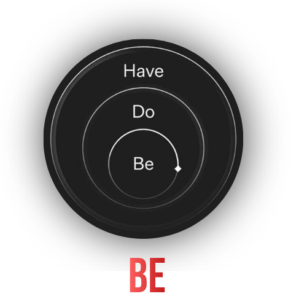
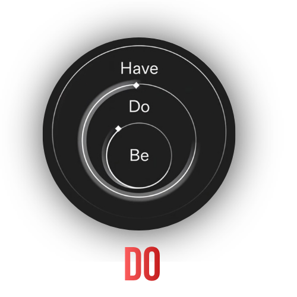
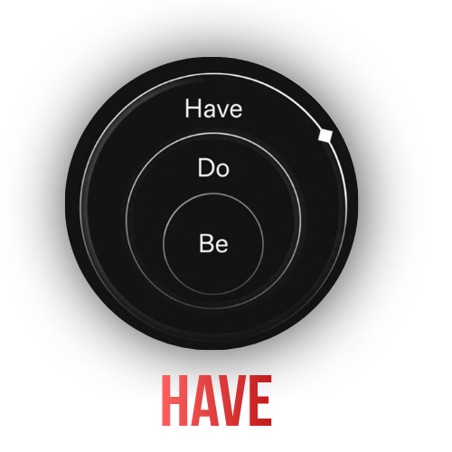
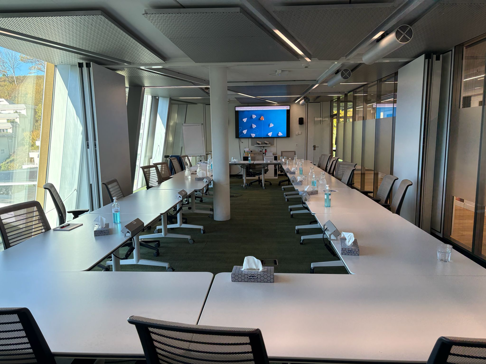
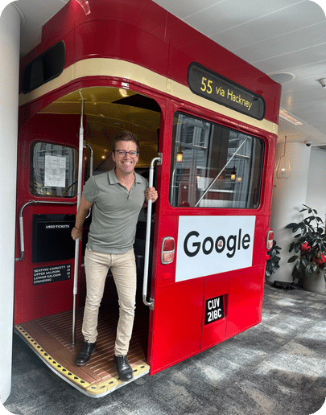
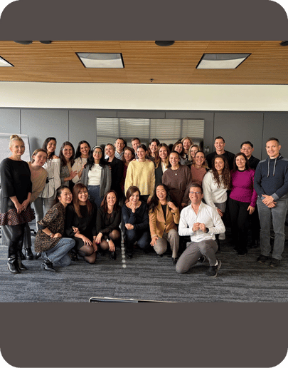
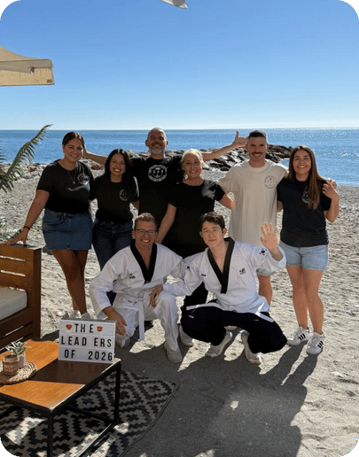

Leading Through Change
Equip your leadership team to guide transformation, uncertainty and disruption without losing trust or momentum.
Executive coaching and corporate leadership workshops for senior teams, HR directors and L&D professionals across Europe and Dubai.
As expectations rise and support stays flat, senior leaders burn out quietly. Turnover at the top spikes, culture fragments, and your leadership pipeline becomes thinner than your strategy can afford.
Communication breakdowns, stalled decisions, invisible politics. When leaders lack the tools to connect and align their teams, the whole organisation slows. Talent disengages before you notice.
Reorganisations, new mandates, shifting markets. Leaders who cannot navigate uncertainty become bottlenecks rather than accelerators. Only 23% of leaders rate their development as high quality.
The Be · Do · Have framework is a structured progression from leadership identity to leadership practice to lasting organisational impact. Each tier is a standalone engagement — or part of a longer transformation.

Clarity — understanding who you are as a leader. The foundation for everything that follows.

Capability — how you lead others. Build the trust, communication and influence that high-performing teams require.

Impact — shaping culture across the organisation. For leaders ready to build a legacy that outlasts them.
Practical, high-trust sessions that help leadership teams align, communicate and move through change together.
Equip your leadership team to guide transformation, uncertainty and disruption without losing trust or momentum.
Develop cross-cultural communication and leadership skills for global organisations with distributed teams.
Frameworks for senior leaders who need to manage conflict and deliver feedback that lands.
Practical tools, peer learning and sustainable frameworks for women leaders in complex organisations.
Build high-trust leadership culture through accountability and psychological safety frameworks that stick.





Seb Jauslin is an ICF PCC Certified Leadership Coach who partners with purpose-driven organisations to build leadership capability that holds under pressure.
His background spans law, the United Nations and the Swiss Federal Government — where he saw firsthand how conformity stifles leadership and accelerates burnout. That experience led him to build a coaching practice grounded in evidence-based methodology and real executive experience.
He works with senior teams across Zürich, Geneva, London and Málaga, and expanded his practice to Dubai in 2026 to support leadership development in high-growth, culturally complex environments.
Zürich · Geneva · London · Málaga · Dubai
"Seb Jauslin — assertive leadership through coaching."
Read the article →A quick diagnostic to understand your organisation's leadership challenges and identify the development path that fits best.
"Better leaders.
Stronger teams.
More capable organisations."